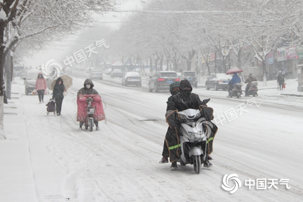
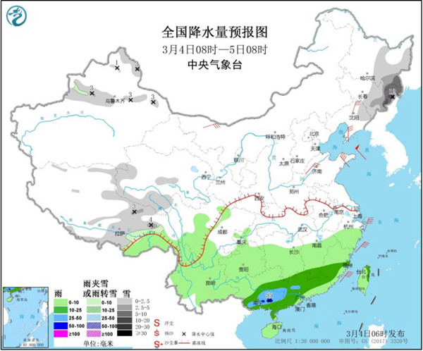
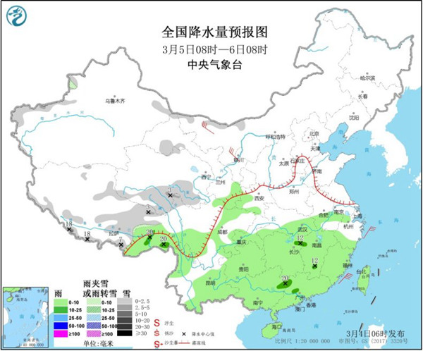
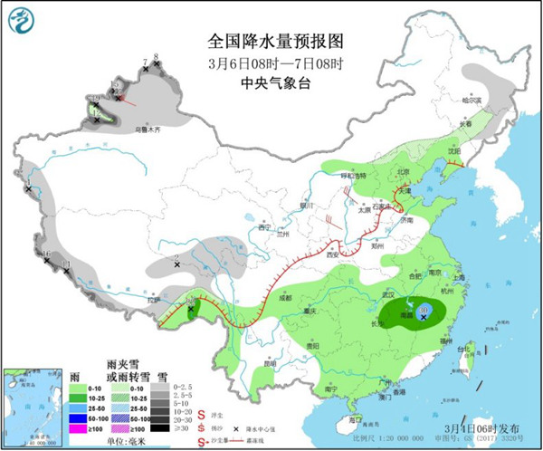

分享到
中国天气网讯 预计今天（4日），全国降水开始减少减弱，东北降雪范围收缩，南方强降雨范围减小。明天，东北降雪彻底停歇，南方降雨明显减弱，以小雨为主。气温方面，今天至周末，西北、华北、华南等不少地方起伏明显，公众请注意及时调整着装，谨防感冒。 南方雨水减弱升温在即 北方气温起伏明显辽宁锦州昨日大雪纷飞。
（图/王国军）
昨天，东北再遭强降雪，江南南部、华南北部等地出现较强降雨。监测显示，昨天内蒙古东南部、黑龙江东南部、吉林、辽宁中东部等地出现小到中雪或雨夹雪，吉林中部和东北部、辽宁中部等地大雪，吉林延边局地暴雪；云南东南部、广西中北部、广东北部、湖南南部、江西中部、福建中部等地出现大雨或暴雨。 今天，东北降雪收缩至东北东部，南方雨水有所减弱。中央气象台预计，东北地区中东部、新疆北部和西部山区、青海南部和西部、西藏北部、东部和南部等地的部分地区有小到中雪或雨夹雪，其中，黑龙江东南部、吉林东部等地局地有大雪或暴雪（10～12毫米）。江西南部、福建中南部、华南大部等地有中到大雨，其中，广西东南部局地有暴雨（50～55毫米）。 南方雨水减弱 北方气温起伏明显

明天，东北降雪彻底停歇，南方降雨持续，但是强度将明显减弱。预计，新疆西部、青海南部、西藏南部和东部等地的部分地区有小到中雪或雨夹雪，其中，西藏南部局地有大雪或暴雪（10～18毫米）。江淮南部、江汉南部、西北地区东部、西南地区东部和南部、江南大部、华南、西藏东南部等地的部分地区有小雨或阵雨，局地有中雨。 南方雨水减弱 北方气温起伏明显

后天 ，南方降水再度开始增强，预计，东北地区中东部、河北北部、新疆北部和西南部、西藏西部、南部和东部、青海东南部等地的部分地区有小到中雪或雨夹雪，新疆北部和西部山区、西藏南部山区局地有大雪或暴雪（10～19毫米）。华北中北部、黄淮东部和南部、江淮、江汉、江南、华南大部、西南地区东部、西藏东南部等地的部分地区有小到中雨，其中，江西东北部局地有大雨（25～30毫米）。 南方雨水减弱 北方气温起伏明显

南方近日雨水连连，雨天路滑，能见度低，公众请注意交通安全。阴雨天气可能造成农作物湿渍害、病虫害增多，农民朋友需注意防范。 气温方面，受冷空气影响，东北和华北部分地区今天气温有所下滑。不过升温将接踵而至，而且势头迅猛。到了6日至8日，华北多地最高气温有望攀升到15℃或以上，例如太原8日最高气温将达到18℃，北京7日最高气温将达到15℃，较常年同期偏高5℃以上，温暖如春。 西北地区气温波动更大，本周中前期晴暖当道，但是周日将会出现10℃左右的断崖式降温，例如兰州今天最高气温将升至17℃，7日跌至3℃，公众请注意及时增减衣物，谨防感冒。 而在阴雨频繁的西南地区东部、江南，未来两到三天气温波动不大，最高气温普遍不足15℃，不少地方甚至只有10℃出头，天气湿凉。同时，华南一带今明天也会出现4～8℃的降温。 到周末南方气温才会陆续回升，江南等地将升至15℃以上，华南升至25℃以上。公众请注意关注临近预报，根据气温变化及时调整着装。